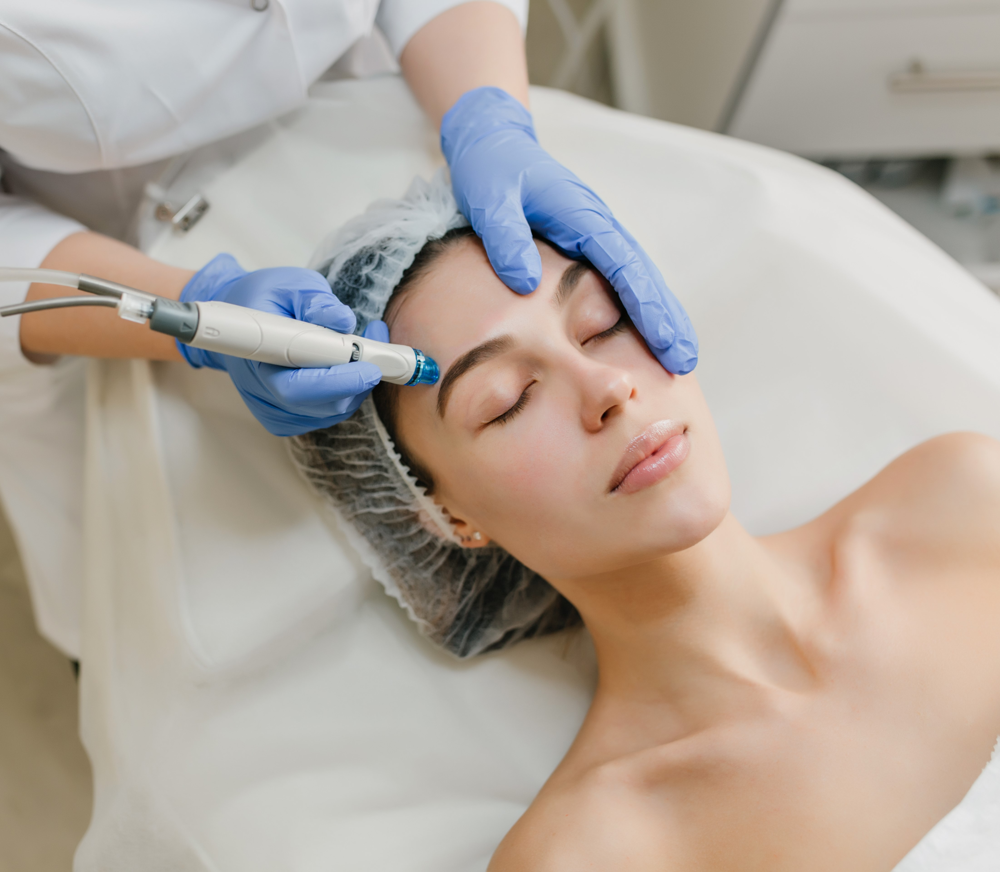

Skin Polishing at Lotus Healthcare and Aesthetic Clinic
As we age, our desire for youthful beauty fades due to skin damage
from pollution and stress.
Lotus Healthcare offers Crystal & Diamond Microdermabrasion
treatment to address these concerns. It can restore dull and
patchy skin by repairing damage caused by sun exposure, stress,
and a busy lifestyle.
This procedure gently exfoliates dead skin, stimulates new cells
and collagen, improves blood circulation, and reduces pore size,
making skin appear younger and smoother.
Lotus Healthcare's Microdermabrasion treatment effectively addresses
sun tan, wrinkles, aging-related fine lines, acne scars, whiteheads
and blackheads, and hyperpigmentation.
What is Microdermabrasion?
Microdermabrasion involves exfoliation of superficial skin with
diamond tip or aluminum oxide crystals.
Who is an ideal candidate for Microdermabrasion?
Microdermabrasion treatment is suitable for every skin type
including sensitive skin as well as for busy individuals because it
is a lunchtime procedure.
What are the benefits of Microdermabrasion treatment at Lotus
Healthcare?
Microdermabrasion treatment at Lotus Healthcare offers several
benefits, including
1. Aiding in new cell growth, reducing pigmentation, rejuvenating
the skin, moisturizing and hydrating it, and boosting blood flow.
2. Exfoliation removes dirt, oil, and dead skin cells, revealing a
fresh layer of healthy skin.
3. It also helps reduce pigmentation, scars, blemishes, and dark
circles, resulting in lighter-toned, more radiant skin.
4. The treatment also helps in reducing pore size thus gives us
smoother, softer appearance.
Is skin Microdermabrasion safe?
Microdermabrasion is a safe, non-invasive process that exfoliates
the top layer of skin, revealing younger-looking skin beneath,
providing instant radiance.
Why Choose Lotus Healthcare and Aesthetic Clinic for
Microdermabrasion?
1. Advanced Technology: Lotus Healthcare uses
cutting-edge equipment and technology for Microdermabrasion,
ensuring effective and safe treatments.
2. Proven Results: With numerous patients treated
annually, Lotus Healthcare has a track record of delivering
successful Microdermabrasion outcomes, restoring youthful and
radiant skin.
3. Expertise: The clinic specializes in cosmetic
procedures, and its skilled professionals are experienced in
providing Microdermabrasion treatments, ensuring you receive
high-quality care.
4. Convenience: Microdermabrasion at Lotus
Healthcare is a lunchtime procedure, making it suitable for busy
individuals who want to enhance their skin without disrupting their
schedules.
5. Safe and Non-Invasive: Microdermabrasion is a
safe and non-invasive process offered at Lotus Healthcare, providing
instant radiance by exfoliating the top layer of the skin.